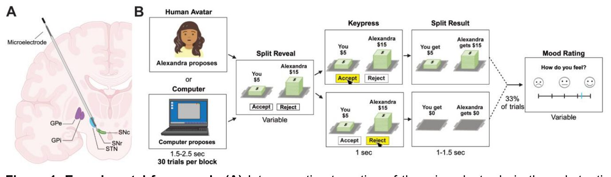
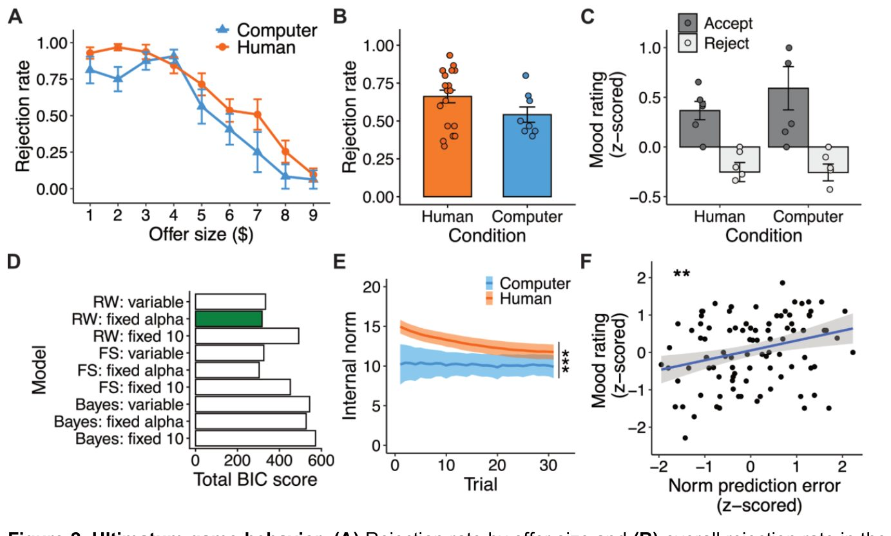
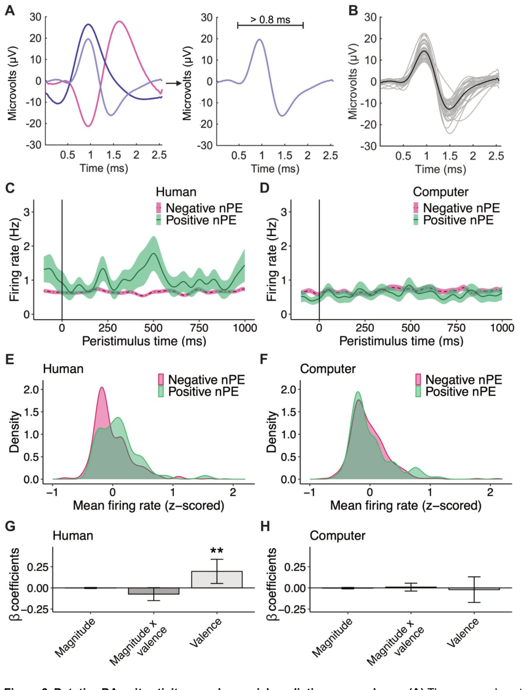

Как отдельные нейроны мозга реагируют на правила общения
{kind=link}

Люди постоянно подстраиваются под негласные правила поведения в обществе, но долгое время оставалось загадкой, как мозг кодирует эти сигналы на уровне отдельных клеток. Исследователи записали электрическую активность глубоких структур мозга у пациентов во время игры в ультиматум. Выяснилось, что нейроны черной субстанции отслеживают ошибки социального прогнозирования. При этом реакция клеток оказалась значительно сильнее, когда участники общались с живыми людьми, а не с компьютерными алгоритмами.
Главное
- Нейроны черной субстанции кодируют ошибки социальных прогнозов.
- Реакция клеток усиливается при взаимодействии с реальными людьми.
- В бледном шаре аналогичных изменений активности не обнаружено.
Подробнее
В эксперименте приняли участие 19 пациентов с болезнью Паркинсона (16 мужчин и 3 женщины, средний возраст 65 лет), которым проводили нейрохирургическую операцию по установке электродов для глубокой стимуляции мозга (DBS). Во время процедуры исследователи записывали активность отдельных нейронов с помощью микроэлектродов, задействуя черную субстанцию ретикулярную (SNr) и бледный шар внутренний (GPi). Участники играли в итеративную версию игры в ультиматум, где нужно было принимать или отвергать денежные предложения от виртуальных партнеров — людей или компьютеров.
Поведение испытанных оценивалось с помощью вычислительного моделирования, которое позволило рассчитать ошибки предсказания норм (nPEs) на каждом шаге игры. Эти ошибки отражают разницу между ожидаемой справедливостью и реальным предложением партнера. Анализ показал, что предполагаемые дофаминергические нейроны SNr кодируют валентность ошибок предсказания норм. Сигнал был заметно ярче, если соперником выступал живой человек, в то время как аналогичный контроль в бледном шаре не выявил значимых эффектов.
Ограничения
Выборка ограничена пациентами с болезнью Паркинсона, перенесшими нейрохирургическую операцию, что сужает применимость выводов на здоровых людей.
Полный перевод статьи
Резюме
Люди замечательно адаптируются к меняющимся нормам, однако нам мало известно о том, как человеческий мозг кодирует эти социальные сигналы на уровне отдельных нейронов. В настоящей работе мы регистрировали активность отдельных нейронов в черной субстанции и бледном шаре у нейрохирургических пациентов во время их участия в итеративной игре «ультиматум» против человеческого и компьютерного аватаров. Используя вычислительное моделирование поведения, мы обнаружили, что предполагаемые дофаминергические единицы в черной субстанции отслеживали валентность ошибок предсказания норм, причем кодирование было более выраженным во время игры с человеческими аватарами по сравнению с компьютерными. Аналогичный анализ в бледном шаре, ядре, прилегающем к черной субстанции, не выявил значимого эффекта. Наши результаты определяют новую роль черной субстанции в кодировании сигналов социального обучения.
Важно
Нейроны черной субстанции кодируют ошибки предсказания социальных норм при взаимодействии с людьми, но не с компьютером.
Важным навыком в рамках социального функционирования является способность учиться и адаптироваться к меняющимся социальным нормам или правилам поведения среди социальных групп. В то время как вычислительное моделирование поведения продвинуло наше понимание того, как люди усваивают социальные нормы, мало что известно о том, какие нейронные механизмы поддерживают этот процесс. Здесь мы используем вычислительное моделирование поведения в сочетании с внутричерепной регистрацией у людей для исследования того, как человеческий мозг кодирует сигналы обучения нормам на уровне отдельных нейронов. Мы регистрировали активность отдельных нейронов в черной субстанции сетчатой части (SNr) и внутреннем сегменте бледного шара (GPi) у нейрохирургических участников, когда они играли в игру с социальным обменом с человеческими и компьютерными аватарами. Мы оценивали ошибки предсказания норм (nPEs) от испытания к испытанию, или мысленно вычисляемые ошибки в социальном предсказании, и показали, что предполагаемые дофаминергические нейроны SNr кодировали валентность nPEs, причем более сильное кодирование наблюдалось во время игры с партнерами-человеческими аватарами по сравнению с компьютерными. Этот результат не наблюдался в GPi. В совокупности наши результаты расширяют существующие знания о SNr, выявляя новую роль нейронов SNr в обучении социальным нормам.
Пояснение
Внутричерепная регистрация — это метод прямой записи электрической активности мозга с помощью электродов, имплантированных в ткани мозга в медицинских целях.
Введение
Люди по своей природе являются социальными существами. Одним из ключевых направлений исследований социальной природы человеческого поведения является изучение нашего восприятия социальных норм и реагирования на них, которые определяются как культурно принятые правила или паттерны поведения в социальных группах. В более ранних работах нормы концептуализировались как относительно стабильные социальные перцепции. Однако в последнее время вычислительное моделирование поведения начало прояснять динамический и гибкий характер восприятия норм человеком, демонстрируя, что люди способны адаптироваться к меняющейся социальной среде на основе ошибок предсказания норм (nPE), определяемых как разница между социальным сигналом или предложением и внутренним ожиданием человека. Данные нейровизуализации и исследований пациентов с поражениями мозга показали роль передней инсулы и вентрального стриатума в отслеживании nPE. Тем не менее, из-за определенных ограничений этих методов (например, низкого пространственно-временного разрешения), вопрос о том, как глубокие ядра мезолимбической системы, такие как черная субстанция (SN), могут быть вовлечены в адаптацию к нормам, остается до конца неизученным.
Важно
Участие глубоких ядер мезолимбической системы в адаптации к социальным нормам оставалось неясным из-за ограничений традиционных методов нейровизуализации.
Пояснение
Ошибки предсказания норм (nPE) — это разница между тем, какого социального поведения вы ожидали, и тем, что произошло на самом деле; они помогают нашему мозгу адаптироваться к меняющимся правилам общения.
Осторожно
Данные о роли черной субстанции в поведении во многом опираются на модели на животных или инвазивные методы у пациентов с нейродегенеративными заболеваниями, что требует осторожности при экстраполяции на здоровых людей.
Большая часть того, что нам известно о функции SN, была установлена в ходе исследований на животных. Например, хорошо за документировано, что дофаминергические (DA) проекции из SN играют ключевую роль в обучении с подкреплением на основе вознаграждения. В то время как прямое изучение SN человека и более широкой системы DA представляет большую сложность при использовании стандартных неинвазивных методов, таких как BOLD фМРТ, в недавних исследованиях применялись методы инвазивной регистрации (т.е. регистрация активности одиночных нейронов) для характеристики роли SN в обучении с подкреплением. Следует отметить, что SN состоит из компактной части черной субстанции (SNc), которая содержит преимущественно DA-нейроны с меньшим количеством гамкергических нейронов, и сетчатой части черной субстанции (SNr), содержащей преимущественно гамкергические нейроны со сравнительно меньшим количеством DA-нейронов. Учитывая, что популяции DA- и гамкергических нейронов не имеют четкого разделения по анатомическим ориентирам в SN, исследования одиночных нейронов человека часто изолируют предполагаемую активность DA-нейронов на основе характеристик форм волн DA, регистрируемых микроэлектродами, без точного указания участков регистрации как SNr или SNc. Поступая таким образом, такие работы продемонстрировали, что предполагаемые DA-нейроны в SN человека (возможно, в SNr и/или SNc) демонстрируют повышенную частоту импульсации в ответ на неожиданные финансовые выигрыши по сравнению с неожиданными проигрышами. И наоборот, фазовая микростимуляция этих клеток ингибирует обучение. Эти результаты согласуются с литературой, связывающей SN с обучением на основе вознаграждения, а DA-нейроны — с кодированием ошибки предсказания вознаграждения. Помимо этой центральной роли в обучении с вознаграждением, было также показано, что активность DA важна для социального поведения как в исследованиях на людях, так и на грызунах. Фармакологические исследования на людях показали, что активность DA модулирует альтруизм и эгалитарное поведение. Исследования на грызунах показали, что активность DA кодирует информацию о незнакомых сородичах, что сродни ошибке социального предсказания. И наоборот, дисфункция DA приводит к поведенческой негибкости, повышенной реактивности и агрессии. В одном недавнем исследовании использовалась вольтамперометрия с быстрой сканирующей цикличностью у людей во время игры в ультиматум с целью непосредственного изучения роли DA в социальном поведении, в частности в SNr. Это исследование показало, что внеклеточные концентрации дофамина в SNr отслеживают разницу между предыдущими и текущими предложениями, причем более высокие общие концентрации дофамина наблюдаются, когда испытуемые играют с человеческими, а не с компьютерными аватарами. Тем не менее, роль отдельных нейронов SN в социальном поведении человека остается неизвестной. В более общем плане было бы ценно официально сопоставить совокупность работ, демонстрирующих роль системы DA в обучении на основе вознаграждения, с работами, демонстрирующими ее роль в социальном поведении на уровне отдельного нейрона.
Здесь мы используем вычислительное моделирование поведения и регистрацию активности одиночных нейронов человека, чтобы определить вычислительную роль нейронов SNr в поведении, связанном с социальными нормами. Участники, перенесшие операцию по имплантации устройств глубокой стимуляции мозга (DBS) по поводу болезни Паркинсона (PD), прошли процедуру регистрации активности одиночных нейронов из SNr или внутреннего сегмента бледного шара (GPi) во время игры в итеративный ультиматум (UG) — поведенческую парадигму, которая ранее использовалась для изучения реакции на справедливость, а также адаптации к нормам. В целом участники принимали или отвергали вариативные предложения от людей или компьютерных партнеров. Как описывалось ранее, участники часто отвергали невыгодные предложения, но со временем могли адаптироваться к предложениям контрагентов (т.е. к социальной норме). Вычислительное моделирование поведения показало, что участники ожидали более щедрых предложений при игре с людьми по сравнению с компьютерными партнерами, что говорит о зависимости ожиданий справедливости от идентичности социального партнера. Важно отметить, что валентность nPE, которая сигнализирует о направлении отклонений между ожидаемыми и полученными предложениями, кодировалась в активности предполагаемых DA-нейронов SNr, причем кодирование было более выраженным во время игры с человеческими аватарами по сравнению с компьютерными. Аналогичный контрольный эксперимент в GPi не выявил значимого влияния валентности nPE на частоту импульсации. Эти результаты демонстрируют, что сигналы обучения нормам управляют активностью SNr во время социальных взаимодействий и обеспечивают нейровычислительную характеристику этой активности на уровне отдельного нейрона.
Результаты
Экспериментальная схема
Мы собрали 27 сеансов регистрации активности одиночных нейронов из SNr у 19 участников с болезнью Паркинсона (16 мужчин, 3 женщины, возраст 65 ± 1.93 года [среднее ± стандартная ошибка среднего, SEM], Таблица S1), которым была проведена операция по имплантации электродов для глубокой стимуляции мозга (DBS) в субталамическое ядро (STN) (Рис. 1A). Во время регистрации активности одиночных нейронов участники играли в итеративную версию игрыльтиматум (UG), в которой предложения динамически изменялись со временем. На каждом испытании участникам предъявлялся предлагаемый вариант разделения суммы в $20 от вымышленного «человеческого» или «компьютерного» партнера, который они могли принять или отклонить (Рис. 1B). Если участник принимал предложение, каждая сторона получала предложенную долю. Если участник отклонял предложение, ни одна из сторон не получала вознаграждения. Предложения были псевдослучайными и распределенными нормально, варьируя от 1 до 9 со средним размером предложения $5. Эта игра также включала самооценку настроения после случайных 33% испытаний в каждом блоке. Перед поведенческим анализом сеансы с невыраженным, монотонным поведением были исключены в целях защиты качества данных от невнимательности, сонливости или слабого понимания инструкций. Монотонными сеансами считались те, в которых принималось или отклонялось менее 2 предложений за весь человеческий или компьютерный блок, а также те, в которых логистическая аппроксимация выбора в зависимости от размера предложения имела неположительный наклон. В когорте SNr было исключено 3 блока с человеческим аватаром и 3 сеанса с компьютерным аватаром. Более подробную информацию см. в разделе «Материалы и методы».
Пояснение
Глубокая стимуляция мозга (DBS) — хирургический метод лечения неврологических расстройств, при котором в определенные структуры мозга имплантируются электроды, подающие электрические импульсы.
Поведение в игре ультиматум
Предыдущие работы показали, что здоровые люди с большей вероятностью отвергают несправедливые предложения, особенно от партнеров-людей. Поэтому мы сначала попытались изучить, как выбор наших участников различается в зависимости от справедливости предложений и контекста принятия решений (условия взаимодействия с человеком против компьютера), запустив модель с со смешанными эффектами. В этой модели бинарные варианты выбора (отклонение = 0, принятие = 1) предсказывались размером предложения (то есть 1, 2 и т. д.), условием (человек = 1, компьютер = 2) и взаимодействием между этими факторами, со случайными эффектами для участника и для сеанса внутри участника. Только влияние размера предложения существенно сказывалось на выборе (предложение, ***p = 8.2e-31, β ± SE = -0.85 ± 0.071; отношение шансов [OR] = 0.43, 95% доверительный интервал [CI] [0.37, 0.49]; условие, p = 0.15, β ± SE = -0.93 ± 0.65, OR = 0.40, 95% CI [0.11, 1.41]; предложение × условие, p = 0.21, β ± SE = 0.14 ± 0.12, OR = 1.15, 95% CI [0.92, 1.45]), что указывает на уменьшение частоты отклонений участниками по мере увеличения размера предложения во всех условиях (Рис. 2A). Модель со смешанными эффектами, предсказывающая общую частоту отклонений по условиям с теми же случайными эффектами, продемонстрировала, что общая разница в частоте отклонений между условиями была незначимой (условие, p = 0.46, β ± SEM = -0.14 ± 0.18; OR = 0.87, 95% CI [0.61, 1.25]) (Рис. 2B).
{kind=link}

Аналогичные модели со смешанными эффектами показали, что общая скорость реакции (условие, p = 0.29, β ± SEM = 0.43 ± 0.41; OR = 1.53, 95% CI [0.69, 3.41]; Рис. S1A) и оценки настроения (условие, p = 0.68, β ± SEM = 1.00 ± 2.41; OR = 2.72, 95% CI [0.023, 320.83]; Рис. S1B) существенно не различались между условиями. Тем не менее, модель со смешанными эффектами, предсказывающая стандартизированные (z-преобразованные) оценки настроения по непосредственно предшествующему выбору, условию и взаимодействию этих факторов со случайными эффектами участника и сеанса, продемонстрировала, что z-оценки настроения были выше после принятых испытаний по сравнению с отклоненными как в условиях с человеком, так и с компьютером (выбор, *p = 0.024, β ± SEM = 0.50 ± 0.22; OR = 1.64, 95% CI [1.07, 2.53]; условие, p = 0.81, β ± SEM = -0.049 ± 0.20; OR = 0.95, 95% CI [0.64, 1.41]; условие × выбор, p = 0.63, β ± SEM = 0.15 ± 0.31; OR = 1.16, 95% CI [0.62, 2.17]) (Рис. 2C).
Важно
Частота отклонения предложений снижалась по мере роста их размера (p = 8.2e-31), а настроение участников было значительно выше после принятия предложений (p = 0.024), причем тип партнера (человек или компьютер) не оказывал существенного влияния на поведение.
В совокупности эти результаты показывают, что участники испытывали отвращение к низким предложениям и переживали негативные кратковременные состояния настроения после отклонения предложений. Эти данные свидетельствуют о том, что, несмотря на наличие болезни Паркинсона и даже при отсутствии реального денежного стимулирования, наши участники вели себя в основном так же, как описывается в предыдущих результатах исследований игры в ультиматум у здоровых людей более молодого возраста.
Моделирование адаптации норм
Далее мы провели вычислительное моделирование поведения, чтобы охарактеризовать поведение при отклонении предложений и вычислительную динамику, лежащую в основе обновления субъективных норм. Все детали моделирования приведены в разделе «Материалы и методы». Кратко: подобно нашей предыдущей работе, мы сконструировали субъективную полезность U(t) на каждой попытке как разницу между полученным предложением и чувствительностью индивида к нарушению нормы. В модели f представляет внутреннюю норму индивида, а альфа (α ∈ [0,1]) представляет чувствительность участника к нарушению нормы (т.е. воспринимаемую разницу между внутренней нормой и полученным предложением), при этом более высокие значения α отражают большую неприязнь к несправедливости. Субъективная полезность U(t) связана с вероятностью выбора через функцию softmax. Мы сравнили три класса моделей, которые различались по своим предположениям о том, как обновляются внутренние нормы: модели Рескорлы-Вагнера (RW), в которых нормы обновляются с использованием обучения на основе временных различий; байесовские модели (Bayes), в которых нормы обновляются согласно правилу Байеса; и модели неприятия неравенства Фера-Шмидта (FS), в которых нормы не обновляются. Внутри каждого класса индивидуальные модели различались по предположениям о начальной внутренней норме (f0), которая могла быть зафиксирована на уровне $10 (фиксированная f0, соответствующая равному разделу) или быть переменной начальной нормой ожидания, индивидуально подобранной под поведение каждого участника (переменная f0). Иными словами, если один игрок начинает сессию с ожиданием справедливости для начального предложения в 9, а другой — с ожиданием в 11, то модель с переменной f0 должна уловить каждое из этих начальных ожиданий при подгонке модели. Таким образом, в моделях с переменной f0 параметр f0 был свободным. Дополнительно мы рассмотрели модели с переменной f0, в которых чувствительность к несправедливости α была зафиксирована на уровне средней групповой α (фиксированная α); средняя групповая α была получена путем усреднения оценок α, изначально подобранных как свободные параметры. Всего мы рассмотрели 9 моделей (3 модели × 3 спецификации начальной внутренней нормы/альфы). Для моделей с переменной f0 параметры f0 и α были свободными. Для моделей с фиксированной f0 параметр α был свободным, а f0 — фиксированным. Наконец, для моделей с фиксированной α параметр f0 был свободным, а α — фиксированным.
Важно
Моделирование показало, что поведение участников лучше всего описывается моделью неприятия неравенства Фера-Шмидта (FS) с фиксированной чувствительностью (α), за которой следует модель Рескорлы-Вагнера (RW) с фиксированной α.
После подгонки моделей к поведенческим данным каждого участника мы сравнили качество подгонки, изучив результирующий минимальный байесовский информационный критерий (BIC) как на индивидуальном уровне (Таблица SN, Набор данных SN), так и на групповом уровне (Рис. 2D). Модель FS: фиксированная α показала наилучшее соответствие, за ней следовала модель RW: фиксированная α (Рис. 2D).
Кроме того, чтобы выяснить, может ли поведение определяться классической ошибкой предсказания вознаграждения (RPE), мы сравнили все 9 моделей с подходом Q-обучения, аналогично предыдущим работам. Классический алгоритм Q-обучения изучает оптимальную функцию ценности действия в среде без какой-либо априорной модели динамики этой среды. Он делает это путем обновления оценок ценности выполнения действия в данном состоянии (т.е. Q-значения) на основе полученного вознаграждения и оценочной ценности следующего состояния. Этот метод корректирует Q-значения инкрементально, движимый RPE. Обновления, направляемые RPE, производятся со скоростью обучения от 0 до 1 после получения вознаграждения и до того, как будет предложено следующее предложение. Таким образом, в то время как nPE описывает, насколько выше или ниже предложение относительно модельной нормы справедливости индивида, RPE представляет собой разницу между полученным результатом и ожиданием, основанным на предыдущих событиях. Мы сравнили качество подгонки всех 9 моделей с подходом Q-обучения по минимальному общему баллу BIC. (См. Набор данных SN и Таблицу SN для всех оценок параметров, а также распределений параметра зависти для каждого участника и каждой модели). Сравнение моделей показало, что подход Q-обучения работал хуже, чем все 9 моделей, при этом модели FS: фиксированная α и RW: фиксированная α снова показали наилучшее соответствие (Рис. SN; см. Набор данных SN для индивидуальных баллов BIC). Более того, эти результаты согласуются как внутри, так и между условиями с человеком и компьютером (Рис. SN). Эти результаты позволяют предположить, что поведение в нашей задаче мотивировано не классическим Q-обучением, а скорее статическими предпочтениями, основанными на социальных переменных, как в модели FS: фиксированная α, или основанным на модели включением социальной информации в ожидания норм с течением времени, как в модели RW: фиксированная α.
Пояснение
Q-обучение — метод обучения с подкреплением, где агент учится выбирать действия, максимизирующие будущую награду, основываясь на ошибках предсказания (RPE), а не на социальных нормах.
Далее, чтобы облегчить оценку доказательной силы каждой из двух моделей с наилучшей подгонкой, мы оценили ΔBIC, ожидаемую частоту моделей и защищенные вероятности превышения (Таблица SN). Эти анализы продемонстрировали, что модель FS: фиксированная α имела самый низкий BIC с ожидаемой частотой модели 0,435 и защищенной вероятностью превышения 0,932. Модель RW: фиксированная α имела ΔBIC 13,707, ожидаемую частоту модели 0,174 и защищенную вероятность превышения 0,043. Таким образом, хотя в целом имеются более веские доказательства в поддержку модели FS: фиксированная α, также существуют свидетельства некоторой гетерогенности в наилучшем соответствии между двумя моделями-кандидатами, что согласуется с тем фактом, что средние баллы BIC были сопоставимы и составляли 10,45 и 10,93 для моделей FS: фиксированная α и RW: фиксированная α соответственно.
Затем мы продолжили оценку этих двух моделей, исследуя степень идентифицируемости каждой из них с помощью восстановления моделей (Рис. S3; Таблица S4). Анализ восстановления моделей продемонстрировал вероятность восстановления 45.47% для модели RW: fixed alpha и 37.62% для модели FS: fixed alpha, что указывает на то, что хотя эти модели показали сопоставимо хорошие результаты по наилучшему соответствию, модель RW: fixed alpha продемонстрировала более высокую идентифицируемость. Дополнительное восстановление на уровне классов (модели FS, модели RW, модели Байеса, Q-обучение), выполненное путем усреднения вероятностей восстановления по моделям внутри каждого класса, дополнительно подтвердило, что поведенческие прогнозы, генерируемые этими классами вычислительных моделей, различимы (Таблица S5; Рис. S4). Таким образом, из двух моделей с наилучшим соответствием модель RW: fixed α продемонстрировала наилучшую идентифицируемость при восстановлении моделей.
Важно
Модель RW: fixed α показала наилучшую идентифицируемость при восстановлении и успешно воспроизвела паттерны поведения испытуемых как на уровне групп, так и на индивидуальном уровне.
Затем мы исследовали, воспроизводит ли модель RW: fixed α паттерны выбора, наблюдавшиеся в нашем исследовании, проведя как восстановление параметров, так и апостериорные прогнозные проверки. Истинные (Таблица 1) и смоделированные значения параметров были существенно коррелированы в этой модели (Рис. S5), что указывает на хорошую восстанавливаемость параметров. Более того, модель RW: fixed α воспроизвела общие показатели отклонения как в условиях с человеческим (среднее ± SEM: наблюдаемое: 0.662 ± 0.042; смоделированное: 0.652 ± 0.045), так и с компьютерным (наблюдаемое: 0.542 ± 0.050; смоделированное: 0.500 ± 0.065) аватаром (Рис. S6A). Модель RW: fixed α также воспроизвела негативное влияние размера предложения на частоту отклонений (Рис. S6B). Наконец, чтобы оценить, воспроизводит ли модель RW: fixed α поведение на уровне отдельных испытуемых, индивидуальные показатели отклонения для наблюдаемых и смоделированных сессий также были сопоставлены, выявив сильную линейную корреляцию (Рис. S6C; моментно-производная корреляция Пирсона, ***p = 4.55e-12, r = 0.914, 95% ДИ 0.823 - 0.959).
Таблица 1. Оценки эмпирических параметров.
| Условие | Температура (n.s.) | Начальная норма (*) | Скорость адаптации нормы (n.s.) |
|---|---|---|---|
| Человек | 4.31 ± 1.43 | 14.96 ± 0.86 | 0.02 ± 0.01 |
| Компьютер | 5.19 ± 3.19 | 10.20 ± 2.54 | 0.08 ± 0.04 |
n.s. - недостоверно, * - p < 0.05
Совокупность успешного восстановления моделей, восстановления параметров и способности модели RW: fixed α воспроизводить поведенческие паттерны, наблюдаемые в нашем исследовании на групповом и индивидуальном уровнях, предоставляет доказательства того, что эта модель подходит для интерпретации ментальных моделей, управляющих поведением в нашей задаче.
Более того, эти результаты показывают, что обучение с подкреплением на основе временных разностей с фиксированной чувствительностью к несправедливости лучше всего объясняет усвоение участниками новой информации в их ожидания нормы с течением времени.
Оценки параметров температуры, исходной нормы и скорости адаптации нормы, полученные путем подгонки модели адаптации нормы RW fixed alpha к поведению каждого испытуемого в игре «Ультиматум» (UG). Блоки с человеком и компьютером подгонялись отдельно. Оценки параметров блоков с человеком и компьютером сравнивались с помощью односторонних U-критериев Манна — Уитни (тестов сумм рангов Вилкоксона). Приведенные статистические данные представляют собой среднее значение ± стандартная ошибка среднего. *p < 0.05 и n.s. = незначимо по результатам односторонних тестов сумм рангов Вилкоксона. n = 21 блок игрового процесса с человеческими аватарами и блоки игрового процесса с компьютерным аватаром.
Пояснение
Ошибкой предсказания нормы (nPE) называют разницу между реальным предложением и ожиданиями человека; она напрямую влияет на его настроение, подобно финансовым вознаграждениям.
Затем мы изучили значения параметров выигравшей модели RW: fixed α. Мы обнаружили, что как исходные, так и внутренние нормы для всей сессии (f) были выше в условиях с человеком, чем в условиях с компьютером (Рис. 2E; Таблица 1). В частности, общая линейная регрессия, прогнозирующая внутреннюю норму по условию, попытке и взаимодействию между этими членами, выявила значимое влияние только для условия, причем внутренние нормы выше в условиях с человеком (условие, ***p = 8.9e-05, β ± SEM = 2.5 ± 0.64; попытка, p = 0.38, β ± SEM = -0.027 ± 0.030; попытка × условие, p = 0.79, β ± SEM = 0.0097 ± 0.036). Несмотря на отсутствие общего различия в отклонениях между условиями, этот анализ на основе моделей предполагает, что участники имели более высокие ожидания относительно предложений от человеческих аватаров по сравнению с компьютерными.
Поскольку было показано, что денежные ошибки предсказания (PE) влияют на сиюминутные ощущения, мы также изучили, может ли это относиться к nPE. Мы рассчитали nPE, взяв разницу между текущим размером предложения и предшествующей внутренней нормой. (Пример оценки nPE на основе поведения при выборе см. на Рис. S7.) Положительные и отрицательные nPE указывают на предложения, которые находятся выше или ниже внутренних норм соответственно. Мы наблюдали значимую положительную корреляцию между nPE и непосредственно следующими за ними оценками настроения (моментно-производная корреляция Пирсона, p = 0.0012, r = 0.31, 95% ДИ 0.13 - 0.47) (Рис. 2F). Модель со смешанными эффектами, прогнозирующая оценки настроения по nPE и условию со случайным эффектом для сессии, выявила значимый фиксированный эффект только для nPE (nPE, p = 0.0013, β ± SEM = 0.31 ± 0.09; условие, p = 0.96, β ± SEM = -0.0089 ± 0.18; ОШ = 1.36, 95% ДИ [1.13, 1.63]). Кроме того, чтобы определить, сохраняется ли связь между nPE и настроением после учета выбора, мы построили модель со смешанными эффектами, прогнозирующую стандартизованное (z-score) настроение по стандартизованному nPE и выбору со случайным эффектом для сессии. Связь между nPE и настроением оставалась значимой после включения выбора в качестве фиксированного эффекта (nPE, *p = 0.035, β ± SEM = 0.24 ± 0.11; ОШ = 1.27, 95% ДИ [1.02, 1.59]), в то время как выбор не оказывал значимого влияния на настроение (выбор, p = 0.32, β ± SEM = 0.23 ± 0.22; ОШ = 1.25, 95% ДИ [0.81, 1.95]). Таким образом, хотя условие не влияло на оценки настроения, nPE влияла на настроение таким образом, что отрицательные nPE снижали оценки настроения, что согласуется с предыдущими работами.
Предполагаемые дофаминергические нейроны в SNr кодируют валентность ошибки социального прогнозирования
Нашей основной целью было изучение вычислительной роли нейронов SNr в адаптации к нормам.
В связи с этим мы извлекли и проанализировали активность одиночных импульсов (спайков) из записей микроэлектродов SNr.
Мы идентифицировали 69 предполагаемых нейронных кластеров из 27 записей микроэлектродов SNr (среднее ± стандартная ошибка среднего (SEM) кластеров на запись: 2,6 ± 0,11) с использованием алгоритма автономной сортировки OSORT. Кластеры представляют собой группы спайков, которые, согласно алгоритму сортировки, происходят из одного источника (т. е. предполагаемого нейрона). Из этих 69 кластеров мы классифицировали 40 единиц как предполагаемые дофаминергические (ДА) нейроны на основе критериев средней базовой частоты импульсации (≤15 Гц) и морфологии формы волны (длительность >0,8 мс, двухфазная), установленных в предыдущих работах по регистрации активности одиночных нейронов в SN человека (среднее ± SEM предполагаемых ДА-единиц на запись: 1,5 ± 0,18) (Рис. 3A).
{kind=link}

Важно
Мы идентифицировали 40 предполагаемых дофаминергических нейронов в SNr, активность которых анализировалась в контексте ошибок социального прогнозирования (nPE).
Стереотаксические координаты для каждого зарегистрированного предполагаемого ДА-нейрона, специфичные для пациента, приведены в Таблице S6.
Ширина форм волны и средняя частота импульсации для всех предполагаемых ДА-нейронов указаны в Таблице S7. Количество предполагаемых ДА-нейронов, зарегистрированных у каждого участника, приведено в Таблице S8. Формы волн для всех 40 предполагаемых ДА-единиц и средняя форма волны для этих единиц представлены на Рис. 3B. Для каждой единицы мы сгладили спайковые последовательности до непрерывных частот импульсации и нормализовали их (z-score), чтобы учесть вариабельность частот между единицами при популяционном анализе (Рис. S9). Затем мы исследовали z-нормализованные частоты импульсации предполагаемых ДА-единиц в поведенчески значимый момент выполнения задачи, а именно во время раскрытия предложения (момент, когда предъявляются варианты выбора).
Мы выдвинули гипотезу, что активность предполагаемых ДА-нейронов может кодировать определенные атрибуты nPE, подобно их известной роли в представлении сигналов несоциального обучения. Чтобы проверить это, мы сначала сравнили средние частоты импульсации предполагаемых ДА-единиц в течение 1000 мс после раскрытия предложения для попыток, приводящих к положительным и отрицательным nPE (выше и ниже внутренней нормы соответственно) в условиях взаимодействия с человеком и компьютером. Абсолютные необработанные непрерывные частоты импульсации (до z-нормализации) см. на Рис. 3C-D. Графики плотности вероятности средних z-нормализованных частот импульсации в течение 1000 мс после раскрытия предложения см. на Рис. 3E-F. Мы обнаружили, что в условиях взаимодействия с человеком предполагаемые ДА-единицы транзиторно увеличивали свою спайковую активность при положительных nPE-попытках сильнее, чем при отрицательных (Рис. 3C; Рис. 3E). Это увеличение было ослаблено в условиях взаимодействия с компьютером (Рис. 3D; Рис. 3F). Чтобы проверить значимость наблюдаемого влияния валентности nPE на частоту импульсации, а также изучить, могут ли эти единицы кодировать величину nPE, мы построили модель со смешанными эффектами, предсказывающую активность ДА-единиц в течение 1000 мс после раскрытия предложения на основе валентности nPE (1 = отрицательная, 2 = положительная), величины nPE и взаимодействия между этими членами со случайным эффектом для единицы в каждом условии (Рис. 3G-H; Таблица 2). Фиксированный эффект валентности nPE в условиях взаимодействия с человеком был единственным значимым предиктором частоты импульсации (валентность nPE, **p = 0,008, β ± SEM = 0,19 ± 7,3e-02, 95% ДИ [0,05, 0,34]; Рис. 3G; другие оценки см. в Таблице 2).
Таблица 2. Сводка моделей со смешанными эффектами, предсказывающих активность предполагаемых дофаминергических (DA) единиц черной субстанции сетчатой (SNr) при раскрытии.
| Фиксированный эффект | Оценка | Стандартная ошибка | t-значение | p-значение |
|---|---|---|---|---|
| Человек | ||||
| Intercept | -0.004703 | 0.027146 | -0.173 | 0.86280 |
| nPE magnitude | -0.001546 | 0.003287 | -0.470 | 0.63876 |
| nPE valence ** | 0.194946 | 0.073006 | 2.670 | 0.00771 |
| nPE magnitude x nPE valence | -0.073754 | 0.038881 | -1.897 | 0.05815 |
| Компьютер | ||||
| Intercept | -0.003115 | 0.031721 | -0.098 | 0.922 |
| nPE magnitude | -0.002899 | 0.004358 | -0.665 | 0.508 |
| nPE valence | -0.020615 | 0.077226 | -0.267 | 0.790 |
| nPE magnitude x nPE valence | 0.008925 | 0.023744 | 0.376 | 0.707 |
*** p < 0.01*
Пояснение
nPE (norm prediction error) — ошибка прогнозирования нормы; показатель того, насколько результат отклоняется от ожиданий участника. Модели со смешанными эффектами позволяют учитывать как общие закономерности (фиксированные эффекты), так и индивидуальные различия (случайные эффекты).
Чтобы формально проверить, как эффект валентности nPE различается в зависимости от условий, мы построили модель со смешанными эффектами, в которой фиксированные эффекты (величина nPE, валентность nPE, условие (человек или компьютер) и их соответствующие члены взаимодействия) и случайный эффект для единицы предсказывали групповую активность предполагаемых ДА-единиц SNr в течение 1000 мс после раскрытия предложения для всех объединенных данных SNr (Таблица S9). Эта модель показала, что средние частоты импульсации предполагаемых ДА-единиц SNr значимо предсказывались не только валентностью nPE (валентность nPE, **p = 0,0057, β ± SEM = 0,20 ± 7,3e-02, 95% ДИ [0,06, 0,34]), но и взаимодействием между валентностью nPE и условием (валентность nPE x условие, *p = 0,036, β ± SEM = -0,22 ± 0,11, 95% ДИ [-0,43, -0,01]), таким образом, что кодирование валентности nPE частотой импульсации было значимо сильнее в условиях взаимодействия с человеком, чем с компьютером.
Наконец, чтобы учесть потенциальную роль размера предложения в наблюдаемом нейронном ответе на валентность nPE, мы построили линейную модель со смешанными эффектами, предсказывающую активность предполагаемых ДА-единиц SNr в момент раскрытия предложения в условиях взаимодействия с человеком на основе фиксированных эффектов размера предложения и валентности nPE со случайным эффектом для единицы. Этот анализ показал, что валентность nPE оставалась значимым предиктором частоты импульсации при раскрытии предложения даже после контроля размера предложения (валентность nPE, *p = 0,022, β ± SEM = 0,12 ± 5,1e-02, 95% ДИ [0,02, 0,21]), тогда как размер предложения не был значимым предиктором (предложение, p = 0,45, β ± SEM = -3,6e-03 ± 4,7e-03, 95% ДИ [-0,01, 0,01]). Мы повторили этот анализ, рассматривая размер предложения как категориальную переменную. И снова валентность nPE была единственным значимым предиктором частоты импульсации (валентность nPE, *p = 0,030, β ± SEM = 0,11 ± 5,1e-02, 95% ДИ [0,01, 0,21]), без значимого эффекта размера предложения. Эти данные свидетельствуют о том, что наблюдаемая активность этих предполагаемых ДА-нейронов более согласуется с кодированием того, является ли предложение лучше или хуже ожиданий участника относительно внутренней нормы, чем только с величиной предложения.
Осторожно
Исследование проводилось на людях с использованием инвазивных микроэлектродов; корреляция между активностью нейронов и валентностью nPE не доказывает прямую причинно-следственную связь в рамках данного эксперимента.
В целом, эти результаты показывают, что предполагаемые ДА-единицы SNr кодируют валентность nPE, причем более выраженное кодирование наблюдается в условиях взаимодействия с человеком, что обеспечивает уникальный нейронный механизм, посредством которого нейроны SNr отслеживают социальную информацию.
Сводка моделей со смешанными эффектами, в которых фиксированные эффекты величины ошибки прогнозирования нормы (nPE), валентности nPE и их соответствующие члены взаимодействия предсказывали групповую активность предполагаемых ДА-единиц SNr в течение мс после раскрытия предложения в условиях взаимодействия с человеком или компьютером. **p < 0,01 согласно модели со смешанными эффектами. Std. Error = стандартная ошибка. n = 31 предполагаемый ДА-нейрон в условиях взаимодействия с человеком и 16 предполагаемых ДА-нейронов в условиях взаимодействия с компьютером.
Предполагаемые нейроны в GPi не кодируют валентность ошибки социального прогнозирования
Возможно, эффект кодирования nPE, наблюдаемый в активности предполагаемых единичных нейронов SNr, отражает широко распространенную активацию в ядрах базальных ганглиев (BG). Чтобы изучить анатомическую специфичность этого эффекта, мы провели аналогичный эксперимент на другой когорте пациентов нейрохирургического профиля, которым проводилась операция DBS в другом ядре BG — GPi (5 мужчин, n = 3 пациента с БП и n = 2 с дистонией, возраст 53 ± 8,5 лет; Рис. SN9A). У этих 5 участников мы собрали 5 сессий UG только с человеческим блоком и сессии UG как с человеческим, так и с компьютерным блоками, а также рейтингами настроения. В этой группе частота отказов снижалась с увеличением размера предложения без значимых различий между условиями (Рис. SN9B). Логистическая регрессионная модель, предсказывающая бинарный выбор на основе размера предложения, выявила значимый эффект (предложение, ***p = 1,9e-14, β ± SEM = 1,3 ± 0,17), что указывает на более высокую вероятность принятия больших предложений по сравнению с меньшими. Для облегчения сравнения с группой регистрации SNr мы оценили nPE для этих сессий, используя выигрышную модель из когорты SNr, а именно модель RW с переменной начальной нормы и фиксированной альфой.
Мы идентифицировали 19 предполагаемых единиц из 7 сессий регистрации (среднее ± SEM кластеров на запись: 2,7 ± 0,29). Ширина формы волны и средняя частота импульсации для всех 19 предполагаемых нейронов GPi приведены в Таблице SN10.
Важно
Анализ 16 нейронов GPi не выявил значимой связи активности с валентностью или величиной nPE, что указывает на отсутствие кодирования ошибки прогнозирования в этой области.
Формы волн для всех 19 предполагаемых единиц GPi и средняя форма волны для этих единиц представлены на Рис. SN9C. Мы сгладили спайковые последовательности в непрерывные частоты импульсации согласно протоколу, реализованному в анализе единиц SNr. Затем мы соотнесли активность предполагаемых единиц GPi в течение 1000 мс после раскрытия разделения (split reveal) с валентностью nPE, величиной nPE и их взаимодействием с помощью регрессии со смешанными эффектами, идентичной регрессии, использованной для предсказания активности предполагаемых DA-нейронов SNr при раскрытии разделения в человеческом условии. Эта модель не была построена для компьютерного условия, так как только два игрока завершили UG с компьютерным блоком. Заметим также, что 19 предполагаемых единиц были зарегистрированы во время поведенческой сессии, в которой все предложения были приняты; поэтому поведенческое моделирование для этой сессии не проводилось, в результате чего для анализа в отношении валентности, величины nPE и их взаимодействия осталось 16 предполагаемых единиц GPi. Эта регрессия не выявила значимых эффектов ни для одной из этих переменных или их взаимодействий (Таблица 3).
Таблица 3. Сводка модели со смешанными эффектами, предсказывающей активность всех предполагаемых нейронов бледного шара внутреннего (GPi) при раскрытии.
| Фиксированный эффект | Оценка | Стандартная ошибка | t-значение | p-значение |
|---|---|---|---|---|
| Человек | ||||
| Intercept | 0.09446 | 0.04858 | 1.944 | 0.0545 |
| nPE magnitude | -0.01331 | 0.01224 | -1.087 | 0.2775 |
| nPE valence | 0.17970 | 0.15304 | 1.174 | 0.2409 |
| nPE magnitude x nPE valence | -0.18235 | 0.09359 | -1.948 | 0.0519 |
Сводка модели со смешанными эффектами, в которой фиксированные эффекты величины ошибки нормативного прогнозирования (nPE), валентности nPE и их соответствующие члены взаимодействия предсказывали групповую активность всех единиц GPi в течение 1000 мс после раскрытия разделения в человеческом условии. Std. Error = стандартная ошибка. n = 16 предполагаемых нейронов в человеческом условии.
Чтобы облегчить сравнение между результатами нейронов GPi и нейронов SNr, которое было бы менее смещено различиями в форме волны и частоте импульсации между популяциями, 8 из этих 16 предполагаемых единиц GPi были отобраны для повторного анализа, в котором критерии частоты импульсации и длины формы волны были подобраны в соответствии с таковыми для предполагаемых DA-нейронов SNr. Мы снова соотнесли активность предполагаемых единиц GPi в течение 1000 мс после раскрытия разделения с валентностью nPE, величиной nPE и их членами взаимодействия с помощью регрессии со смешанными эффектами только в человеческом условии. Эта регрессия не выявила значимых эффектов ни для одной из этих переменных или их взаимодействий (Таблица 4). (Визуализацию средних частот импульсации при раскрытии разделения по валентности nPE в человеческом условии см. на Рис. SN6D). Отсутствие статистически значимого эффекта в этой популяции, безусловно, может быть связано с ограниченным размером выборки зарегистрированных единиц в этой области. Таким образом, с учетом этого ограничения, наши результаты предполагают, что, хотя наша выборка предполагаемых DA-нейронов в SNr демонстрирует кодирование валентности nPE, этот паттерн не наблюдался со значимостью в нашей выборке предполагаемых единиц из GPi, даже при подборе по критериям формы волны и частоты импульсации.
Таблица 4. Сводка модели со смешанными эффектами, предсказывающей активность предполагаемых нейронов бледного шара внутреннего (GPi) с согласованной формой волны и частотой спайков при раскрытии.
| Фиксированный эффект | Оценка | Стандартная ошибка | t-значение | p-значение |
|---|---|---|---|---|
| Человек | ||||
| Intercept | 0.088536 | 0.080590 | 1.099 | 0.2771 |
| nPE magnitude | -0.004832 | 0.020630 | -0.234 | 0.8150 |
| nPE valence | 0.478699 | 0.268627 | 1.782 | 0.0761 |
| nPE magnitude x nPE valence | -0.276125 | 0.164248 | -1.681 | 0.0941 |
Сводка модели со смешанными эффектами, в которой фиксированные эффекты величины nPE, валентности nPE и их соответствующие члены взаимодействия предсказывали групповую активность единиц GPi (подобранных по критериям формы волны и частоты импульсации к группе предполагаемых DA-нейронов SNr) в течение 1000 мс после раскрытия разделения в человеческом условии. Std. Error = стандартная ошибка. n = 8 предполагаемых нейронов в человеческом условии.
Предполагаемые DA-нейроны в SNr не кодируют сигналы настроения
Наконец, учитывая, что PE ранее демонстрировали влияние на сиюминутное настроение, мы исследовали, отслеживает ли активность предполагаемых DA-нейронов SNr субъективное настроение. Мы наблюдали, что частота импульсации предполагаемых DA-единиц в течение 1000 мс до оценки настроения не коррелировала значимо с z-оцененными рейтингами настроения (корреляция Пирсона, p = 0,16, r = -0,09, 95% ДИ -0,21 – 0,03) (Рис. SN10). Модель со смешанными эффектами, предсказывающая групповую активность DA-единиц в этот период на основе рейтинга настроения со случайным эффектом для единицы, не выявила значимого эффекта для рейтинга настроения (рейтинг настроения, p = 0,16, β ± SEM = -0,027 ± 0,019), что согласуется с результатами корреляционного теста. Эти данные свидетельствуют о том, что, хотя предполагаемые DA-нейроны SNr реагируют на валентность nPE, они не кодируют рейтинги настроения.
Осторожно
Исследование проводилось на людях в клинических условиях (пациенты с БП и дистонией), что ограничивает обобщаемость результатов на здоровых людей; малый размер выборки нейронов требует осторожности при интерпретации отсутствия эффектов.
Обсуждение
В текущем исследовании изучалось, как отдельные нейроны в SNr человека кодируют сигналы социального обучения и настроения. Поведенчески мы обнаружили, что участники часто отвергали ненулевые предложения, что согласуется с предыдущими работами, демонстрирующими, что поведение отказа в UG обусловлено не объективной, а субъективной полезностью, которая отражает ценность предложения для конкретного индивида с учетом его ожиданий относительно норм и личной чувствительности к несправедливому неравенству. Это поведение сохранялось даже во время игры с компьютерными аватарами, что указывает на определенную степень социального мышления в менее социальных контекстах, на что также указывает превосходство моделей социальных норм в объяснении выбора участников по сравнению с обучением на основе несоциального вознаграждения. Моделирование социальных норм показало, что участники имели более высокие ожидания справедливости от людей по сравнению с компьютерами, а nPE влияли на их сиюминутное настроение. Нейронно, нейроны черной субстанции отслеживали валентность переживаемых nPE, причем более выраженное кодирование наблюдалось в условии с аватаром человека; эти нейроны не кодировали сиюминутное настроение. В совокупности эти данные указывают на ключевую роль черной субстанции в кодировании сигналов социального обучения.
Важно
Исследование подтверждает, что черная субстанция играет центральную роль в кодировании сигналов социального обучения, а субъективная полезность, а не объективная, определяет поведение участников в условиях социального взаимодействия.
Во-первых, наши результаты демонстрируют полезность вычислительного моделирования в выявлении того, как схожие наблюдаемые формы поведения могут возникать из различных глубинных ментальных процессов. Хотя частота отказов была схожей в условиях с аватаром человека и компьютера, наша модель показывает, что этот выбор был продиктован латентными переменными, включая начальные ожидания норм, чувствительность к несправедливости, вариативность выбора и адаптацию к нормам. В частности, более высокие начальные и сессионные внутренние нормы наблюдались во время игры с аватарами людей по сравнению с аватарами компьютеров, что указывает на то, что ожидания справедливости, которые, в свою очередь, влияют на поведение при выборе, действительно зависели от личности партнера. В результате этот подход к моделированию, подкрепленный надежным восстановлением параметров и апостериорными предиктивными проверками, проясняет значимые латентные процессы, влияющие на поведение при выборе, которые не были бы очевидны исходя только из «сырых» показателей отказов.
Более того, наши результаты подчеркивают важную роль нейронов SNr в кодировании валентности в областях социального и несоциального обучения. Предыдущие работы выявили роль SN в обработке вознаграждения и обучении с подкреплением, при этом активность DA связывается с кодированием ошибки предсказания в несоциальных контекстах. Одно из таких исследований, проведенное на нейрохирургических пациентах, показало, что популяция предполагаемых дофаминергических нейронов SN демонстрирует более высокую частоту импульсации в ответ на неожиданные выигрыши по сравнению с проигрышами, без статистически значимой связи между частотой импульсации и величиной, что аналогично кодированию валентности nPE в социальных контекстах, наблюдаемому в нашем исследовании. Кроме того, было замечено, что дофаминовые нейроны среднего мозга у приматов реагируют специфически на сигналы положительной ошибки в несоциальных контекстах. Наши результаты расширяют эту работу, предоставляя доказательства на бодрствующих людях того, что эти связанные с вознаграждением отдельные нейроны SNr также показывают повышенную активность в ответ на положительные, а не отрицательные nPE во время игры с аватарами людей, демонстрируя, что эти предполагаемые DA-единицы кодируют валентность ошибки предсказания именно в социальной сфере. Наблюдаемое кодирование валентности в частоте спайков предполагаемых DA-нейронов SNr, вероятно, в первую очередь влияет на концентрацию DA в стриатуме через восходящие аксональные проекции. Эта активность также может влиять на активность черной субстанции через локальное дендритное высвобождение DA, что согласуется с недавними работами, выявившими повышенную концентрацию DA в SNr во время взаимодействия с аватарами людей по сравнению с компьютерными аватарами с использованием вольтамперометрии. Кроме того, хотя предполагаемые дофаминергические нейроны SNr, зарегистрированные в нашем исследовании, реагируют специфически на валентность nPE, наши результаты не отрицают, что другие нейроны могут кодировать величину.
Пояснение
nPE (norm prediction error) — это сигнал рассогласования между ожидаемым и фактическим соблюдением социальных норм, который мозг использует для корректировки ожиданий.
В соответствии с предыдущими работами, связывающими ошибки предсказания с настроением, наши результаты показывают, что, хотя nPE влияют на сиюминутные состояния настроения, а валентность этих nPE кодируется в нейронной активности SNr, изменения в настроении, вероятно, отражаются в нейронной активности в других частях человеческого мозга. Наши результаты дополняют недавние исследования на людях, связывающие структурные и функциональные аномалии SN с эмоциональными расстройствами и симптомами, а также внутричерепные сигналы с сигналами социальной оценки, предоставляя доказательства, полученные путем прямой регистрации отдельных нейронов SNr у бодрствующих людей во время эмоционально неприятных социальных взаимодействий. Таким образом, мы вносим вклад в литературу по SN, очерчивая роль этих нейронов в связывании сигналов обучения с настроением в социальных контекстах.
Примечательно, что наши анализы не выявили значимого нейронного отслеживания сигналов nPE со стороны GPi, соседнего ядра базальных ганглиев. Этот результат согласуть этого вывода согласультата согласуется с работами, демонстрирующими очень редкие ответы отдельных единиц на вознаграждение в этой области.
Полученные нами результаты следует интерпретировать с учетом следующих ограничений. Участники исследования в основном мужского пола и пожилого возраста, что характерно для пациентов, наиболее вероятно подлежащих операции глубокой стимуляции мозга (DBS) по поводу болезни Паркинсона (ПД). Таким образом, наше исследование может не учитывать различия в обработке социальных норм, связанные с полом или возрастом. Все эти участники также страдают ПД, которая характеризуется поведенческой ригидностью, психической негибкостью и сниженной способностью переключать когнитивные стратегии, когда они перестают быть выгодными. Патология ПД дополнительно затрагивает целевые области мозга, вызывая гиперактивность нейронов SNr и GPi из-за сниженного дофаминергического входа. Эти пациенты участвуют в нашем исследовании в состоянии отмены дофаминергических препаратов («off»), что облегчает изучение роли сохранившихся предполагаемых дофаминергических нейронов SN в усвоении социальных норм без влияния препаратов, способных изменить обучение и принятие решений; однако дофаминергическая сигнализация у этих пациентов протекает в условиях изначально истощенного уровня дофамина, а это означает, что результаты данного исследования, несмотря на их новизну, могут не распространяться на дофаминергические цепи здоровых лиц.
Осторожно
Ограничения выборки: исследование проводилось преимущественно на пожилых мужчинах с болезнью Паркинсона в состоянии отмены препаратов, что ограничивает перенос выводов на здоровых людей.
Чтобы лучше выяснить, как поведенческие и нейрональные изменения, вызванные патологией ПД, могут влиять на результаты нашего исследования, оптимально было бы сравнить поведенческие и нейрональные данные, полученные от лиц с ПД и без нее. Хотя поведенческие результаты можно сопоставить с данными других участников исследований с использованием игры «Ультиматум» (UG), нейрональные данные единичных нейронов не столь доступны для сравнения ввиду крайне инвазивного характера таких регистраций. По схожим причинам данное исследование ограничено по размеру выборки участников. Кроме того, стремясь использовать все доступные релевантные данные из этой ограниченной выборки, исследование включает данные как тех, кто играл в условиях с человеком и компьютером, так и тех, кто играл только в условиях с человеком, что создает дисбаланс в воздействии условий. Исследование также ограничено в возможности точно определить, как зарегистрированная активность отдельного нейрона в SN транслируется в уровень дофамина в стриатуме; такое разграничение могло бы стать возможным при одновременной регистрации активности единичных нейронов SN и вольтамперометрической регистрации в стриатуме. Наконец, данное исследование не доказывает причинную роль этих нейронов в обработке социальных норм; будущие работы с использованием стимуляции или других методов пертурбации смогут напрямую исследовать причинно-следственные связи.
В совокупности наша работа предполагает нейронную основу способности человека распознавать ошибки в социальном прогнозировании, подтверждая роль SN не только в классически изучаемом обучении с подкреплением, но и в усвоении нормативного социального поведения.
Методы
Этика и участники
Данное исследование было одобрено Институциональным наблюдательным советом Медицинской школы Икана на горе Синай. В ходе исследования нежелательных явлений не зафиксировано. В исследовании приняли участие 24 пациента нейрохирургического профиля (21 мужчина, 3 женщины, средний возраст ± стандартная ошибка среднего (SEM) = 62 ± 2,4 года; Таблица S1). После согласия на операцию по глубокой стимуляции мозга (DBS) пациентам, признанным ведущим нейрохирургом подходящими для участия в исследовании, была предоставлена возможность узнать об участии в данной работе. При проявлении интереса пациентам предоставлялась информация об исследовании, его влиянии на процедуру и любых потенциальных рисках.
Им также было представлено краткое описание поведенческой задачи, включая инструкции и два примера проб. Пациентов уведомили, что они не получат денежного вознаграждения за участие. Вместо этого им было предложено представить, как они итеративно делят $20 с партнерами — людьми или компьютерными аватарами. Вся информация предоставлялась как устно, так и в письменном виде, с достаточным количеством времени для вопросов и разъяснений перед получением письменного согласия.
Операция DBS и регистрация активности одиночных нейронов
Имплантация устройства DBS проводилась в ходе трех операций: имплантация электрода в левое полушарие, имплантация электрода в правое полушарие и имплантация батареи. Эти операции проводились с интервалом примерно в 2–4 недели. Участникам предоставлялась возможность участвовать в исследовании во время любой из операций по имплантации электродов или обеих сразу. На момент операции участники не принимали лекарственные препараты в течение как минимум 9 часов, согласно стандартному клиническому протоколу.
В момент операции DBS, когда пациентов пробуждали для наведения и тестирования клинического электрода (что обычно происходило примерно через 10 минут после имплантации электрода), клиническая процедура ненадолго прерывалась для регистрации активности одиночных нейронов и выполнения задачи. Наш ведущий нейрохирург устанавливал вольфрамовый микроэлектрод в целевую область регистрации, используя микропривод с силовым усилением и трактографию. После позиционирования микроэлектрода в целевых областях регистрации, идентифицированных по их уникальным паттернам нейронной активности, нейрохирург корректировал положение электрода до подтверждения наличия стабильной активности спайков. Нейронные данные регистрировались с помощью электрофизиологической системы Alpha Omega. Для пациентов, которым проводилась операция DBS в субталамическом ядре, регистрация активности одиночных нейронов проводилась в черной субстанции сетчатой части (SNr; Рис. 1A). Для пациентов, которым проводилась операция DBS в бледном шаре (GPi), регистрация активности одиночных нейронов также проводилась в GPi (Рис. S9A). После завершения регистрации клинический стимулятор перемещался в целевую клиническую область для тестирования и окончательной имплантации.
Пояснение
Регистрация активности одиночных нейронов (single-unit recording) — метод записи электрических импульсов (спайков) отдельных нервных клеток с помощью микроэлектродов, позволяющий изучать работу мозга на уровне отдельных нейронов.
Когорта SNr включала 19 участников с болезнью Паркинсона (16 мужчин, 3 женщины, возраст 65 ± 1,93 года). Когорта GPi включала 5 участников с болезнью Паркинсона или дистонией (5 мужчин, 0 женщин, возраст 53 ± 8,5 лет). Во время регистрации активности одиночных нейронов участники выполняли поведенческую задачу, визуализированную на компьютерном мониторе, расположенном в поле зрения. Участники вводили свои ответы с помощью игрового контроллера. Всего мы собрали 27 сессий от когорты SNr и 7 сессий от когорты GPi.
Игра «Ультиматум»
Во время каждой сессии регистрации активности одиночных нейронов участники играли в игру «Ультиматум» (UG), которая используется для оценки норм социальной справедливости и адаптации к нормам (Рис. 1B). Участники играли в одну из двух версий UG: только с человеком (n = 15 сессий у 10 пациентов из когорты SNr; n = 5 сессий у 3 пациентов из когорты GPi) и полную версию с условиями «человек» и «компьютер» (n = 12 сессий у 9 пациентов из когорты SNr; n = 2 сессии у 2 пациентов из когорты GPi).
В версии только с человеком участникам неоднократно предлагались варианты раздела $20 «человеческими» аватарами-партнерами, которые они могли принять или отклонить. Если участник принимал предложение, каждая сторона получала предложенные суммы. Если участник отклонял, каждая сторона получала 0. В начале каждой пробы участникам сначала показывали аватар (1,5–2,5 с). Затем участникам демонстрировали предложенный раздел 20 («раскрытие раздела»; 1 с). Кнопки выбора (принять/отклонить) появлялись под предложенным разделом, побуждая участников сделать выбор (в удобном для них темпе). После выбора выбранный вариант оставался подсвеченным в течение 1 секунды, прежде чем экран менялся, показывая итоговые суммы в долларах, полученные каждой стороной («результат раздела»; 1,5 с). Все предложения составляли 9 или меньше, предложения были псевдослучайными с нормальным распределением от 1 до $9. Выбор не влиял на будущие предложения. Игроки не были заранее осведомлены о структуре предложений. В каждой пробе новое предложение предлагалось новым человеческим аватаром. Человеческие аватары различались по имени, полу и физическим особенностям, чтобы отразить расовое и культурное разнообразие. Пациенты выполняли 30 проб, что занимало примерно 5 минут.
В полной версии с условиями «человек» и «компьютер» участники выполняли 30 проб UG с человеческими аватарами-партнерами, а также дополнительный блок из 30 проб с «компьютерными» партнерами. Порядок блоков был уравновешен: 5 участников играли блок с человеком перед компьютерным блоком, а 7 участников играли компьютерный блок перед человеческим. Кроме того, участники заполняли самоотчет об оценке настроения (в удобном темпе) после случайных 33% проб выбора. Для заполнения этой оценки настроения участники выбирали свое текущее настроение по шкале от несчастного лица (кодируется как 0) до счастливого лица (кодируется как 100). Две незначительные детали представления на экране отличались от таковых в UG: раскрытие раздела появлялось одновременно с кнопками выбора, а результат раздела длился 1 с вместо 1,5 с. В общей сложности эта версия UG занимала примерно 10 минут.
Критерии исключения
Для обеспечения высокого качества данных и предотвращения искажений, вызванных невнимательностью или сонливостью, все сессии, в которых поведение участников указывало на невыполнение инструкций к заданию, исключались из поведенческого анализа. К ним относились сессии с «плоским» поведением, определяемым как сессии, в которых было принято или отклонено менее 2 предложений за весь блок с человеком или компьютером. Эта мера эффективно исключала сессии, в которых участники принимали все предложения, что препятствует вариативности выбора, необходимой для подгонки моделей. Также исключались сессии, в которых логистическая аппроксимация бинарного выбора в зависимости от размера предложения имела неположительный наклон, что означает, что вероятность принятия предложения не увеличивается с ростом его размера. Если оценки настроения были «плоскими», они исключались из анализа, однако данные о поведенческом выборе сохранялись.
Пояснение
«Плоское» поведение или оценки означают отсутствие вариативности в ответах участника, что делает невозможным математическое моделирование процесса принятия решений.
Поведенческие сессии с «плоскими» оценками настроения — это те, в которых разница между минимальной и максимальной оценками составляет менее 10 баллов. В когорте SNr 3 сессии UG и 3 сессии UG-bot были исключены из поведенческого анализа из-за «плоского» выбора. Дополнительно 2 сессии UG-bot были исключены из анализа оценок настроения из-за «плоских» оценок.
В когорте GPi 1 сессия UG была исключена из поведенческого анализа из-за «плоского» выбора, и 1 сессия UG-bot была исключена из анализа оценок настроения.
Вычислительное моделирование поведения
Вся очистка данных, поведенческий анализ и вычислительное моделирование были выполнены в MATLAB и RStudio. Анализ без использования моделей включал: общую частоту отклонений по типу блока (человек/компьютер), частоту отклонений в зависимости от размера предложения, общее время реакции по типу блока, общую оценку настроения по типу блока и оценку настроения в зависимости от выбора (принять/отклонить).
Далее, к данным о выборе были применены модели, ранее использованные для моделирования полезности, вероятностей принятия решений и адаптации норм. Сначала мы представили полезность обмена на каждой попытке, используя уравнение Фера-Шмидта (FS) для полезности неприятия неравенства: Ui(si) = si - α · \max\fi - si, 0\. Здесь полезность (U_i) предложения (s_i) равна разности между s_i и произведением разности между внутренней нормой участника (f_i) и s_i на чувствительность участника к невыгодному неравенству (α \in [0,1], «альфа»). Альфа отражает нежелание участника принимать предложение ниже внутренней нормы в данной попытке. Более высокие значения α представляют большую неприязнь к несправедливости. Чувствительность к выгодному неравенству («вина») в этой парадигме не требуется, так как все предложения составляют $9 или меньше.
Пояснение
Модель Фера-Шмидта (FS) — это математический подход в поведенческой экономике, который количественно оценивает, насколько человек готов пожертвовать личной выгодой, чтобы избежать несправедливого распределения ресурсов.
Затем мы смоделировали вероятность принятия каждого предложения, используя функцию softmax: pi(si) = \fraceβ Ui(si)1 + eβ Ui(si). Эта функция учитывает полезность каждого предложения и параметр обратной температуры (β \in [0,1]), который отражает вариативность выбора участника. Низкие значения β соответствуют более вариативному выбору.
В моделях FS норма считается статической, неизменной метрикой. Чтобы смоделировать адаптацию внутренней нормы, мы сравнили два класса моделей адаптации норм для определения наилучшего соответствия поведению этой когорты: модели Рескорлы-Вагнера (RW), производные от обучения с временными различиями, и байесовские модели наблюдателя. Оба класса моделей адаптации норм предполагают, что внутренняя норма меняется со временем; однако они различаются правилом обновления нормы.
Модели RW — это подход, основанный на обучении с подкреплением, в котором агент учится совершать действия, максимизирующие вознаграждение в неопределенной среде. В моделях RW норма обновляется следующим образом: fi = fi-1 + \varepsilon(si - fi-1). Здесь внутренняя норма (f_i) в попытке i равна норме в предыдущей попытке (fi-1) плюс произведение скорости адаптации нормы (\varepsilon \in [0,1]) и разности между предложением (s_i) и внутренней нормой в предыдущей попытке (fi-1), или nPE. \varepsilon отражает величину влияния предложения (s_i) на развивающуюся внутреннюю норму (f_i).
Байесовские модели, напротив, основаны на статистическом подходе, который оценивает распределение вероятностей параметров модели на основе наблюдаемых данных. Мы предполагаем, что каждый участник моделирует предложения как исходящие из нормального распределения, характеризующегося неизвестным средним и дисперсией. У участника есть начальное априорное распределение среднего (µ) и дисперсии (σ²), и это априорное распределение обновляется с каждым новым предложением. Учитывая µ и σ², предложения (X) определяются как: X / µ, σ² ~ N(µ, σ²). После получения первого предложения (s_i) и при условии априорного распределения p(µ, σ²), апостериорное распределение определяется как: p(µ, σ² / s_i) = p(s_i / µ, σ²)p(µ, σ²).
Сопряженное априорное распределение определяется как: p(µ, σ²) = P₁(µ / σ²)P₂(σ²), p₁(µ / σ²) = NormalDensity(µ / µ₀, σ² k₀), p₂ = Inv-X²(σ² v₀). Далее, после всех последующих предложений, апостериорные распределения определяются итеративно: ki+1 = ki + 1, \nui+1 = \nui + 1, µi+1 = µi + \frac1ki+1(si - µi), \nui+1\sigmai+12 = \nui\sigmai2 + \frackiki+1(si - µi)2. Наконец, в попытке i + 1 обновленная внутренняя норма определяется как: Ei[X] = \int x p(x / µ, \sigma2)p1(µ / \sigma2, µi, ki)p2(\sigma2 / \nui) = µi.
Внутри каждого класса моделей отдельные модели различались предположениями о начальной внутренней норме; модели либо предполагали фиксированное ожидание начальной нормы, равное 10 (соответствующее равному разделу $20; обозначено «fixed f0»), либо переменное ожидание начальной нормы, которое индивидуально подбиралось под поведение каждого субъекта (обозначено «variable f0»). Модели с переменной начальной нормой также различались тем, подбиралась ли альфа индивидуально для каждого субъекта или была фиксированной для всей выборки пациентов на уровне среднего значения группы (обозначено «fixed alpha»).
Все модели были подогнаны к поведенческим сессиям каждого субъекта (с раздельной обработкой блоков человека и компьютера) и сравнены на предмет наилучшего соответствия, определяемого по минимальному общему значению байесовского информационного критерия (BIC) по группе. Общий BIC — это сумма значений BIC для каждого субъекта по каждой модели на уровне группы. Модель FS: fixed alpha победила, за ней последовала модель RW: fixed alpha (Рис. 2D).
Далее, чтобы оценить, определяется ли поведение классической ошибкой предсказания вознаграждения (RPE), мы сравнили все 9 моделей с подходом Q-обучения. Алгоритм Q-обучения изучает оптимальную функцию «действие-ценность» в среде без какой-либо предварительной модели динамики этой среды. Это делается путем обновления Q-значений, которые являются оценками ценности совершения действия в данном состоянии на основе полученного вознаграждения и оценочной ценности следующего состояния. Этот метод корректирует Q-значения инкрементально, основываясь на RPE. Обновления, направляемые RPE, выполняются с коэффициентом обучения от 0 до 1 после получения вознаграждения и до того, как будет предложено следующее предложение. Начальные Q-значения следующие: Q(si, accept) = si · 1 - \eta, Q(si, reject) = si · 1 - \eta. Эти Q-значения дают начальную ценность пары «состояние-действие», в которой предложение s_i принимается или отклоняется. Эта (\eta) представляет собой коэффициент временного дисконтирования, который определяет, насколько будущие вознаграждения влияют на текущую ценность; здесь \eta = 0.8. Далее, для попытки i > 1, основываясь на предыдущем выборе (т.е. принять или отклонить) в попытке i-1, правило обновления Q-обучения при принятии предложения выглядит следующим образом: $Q(s_{i-1}, \text{accept}) = Q(s_{i-1}, \text{accept}) + \alpha(U_i(s_i) + \eta \cdot \max Q(s_i, a) - Q(s_{i-1}, \text{accept}))$. Здесь альфа (α) — это коэффициент обучения, который определяет, насколько ошибка предсказания обновляет старое Q-значение. α находится в диапазоне от 0 до 1; 0 отражает отсутствие обновления (т.е. отсутствие обучения), а 1 отражает полное обновление (т.е. полное обучение).
Альтернативно, правило обновления Q-learning в случае отклонения предложения выглядит следующим образом: Q(si-1, reject) = Q(si-1, reject) + α(0 + \eta · \max Q(si, a) - Q(si-1, reject)).
Разница значений составляет: V_i = Q(s_i, accept) - Q(s_i, reject).
Наконец, вероятность принятия предложения моделируется как: pi(si) = \fraceβ Vi1 + eβ Vi. Таким образом, в то время как nPE описывает, насколько предложение выше или ниже индивидуальной нормы справедливости, основанной на модели, RPE, напротив, представляет собой разницу между полученным результатом и ожиданием, основанным на предыдущих событиях.
Пояснение
Q-learning — это метод обучения с подкреплением, где агент учится выбирать действия, максимизирующие ожидаемую суммарную награду, обновляя значения Q на основе разницы между предсказанным и фактическим результатом.
Мы сравнили значения BIC для всех 9 моделей со значением BIC для подхода Q-learning и обнаружили, что модель FS: fixed α снова обеспечила наилучшее соответствие, за ней следует модель RW: fixed α, при этом подход Q-learning показал худшие результаты, чем все остальные 9 моделей (Рис. S2A). Эти результаты были согласованы как в рамках условий с человеком, так и в условиях с компьютером (Рис. S2B-C), что позволяет предположить, что поведение в нашей задаче мотивировано не классическим Q-learning, а скорее статичными социальными предпочтениями, как в модели FS: fixed α, или основанным на модели включением новой информации в ожидания относительно норм с течением времени, как в модели RW: fixed α.
Затем, чтобы облегчить оценку доказательной силы для каждой из двух наиболее подходящих моделей, мы оценили ΔBIC, ожидаемую частоту моделей и защищенные вероятности превышения (Таблица S3). Эти анализы показали, что модель FS: fixed α имела наименьший BIC с ожидаемой частотой модели 0,435 и защищенной вероятностью превышения 0,932. Модель RW: fixed α имела ΔBIC 13,707, ожидаемую частоту модели 0,174 и защищенную вероятность превышения 0,043. Это означает, что 43,5% популяции, как ожидается, лучше всего описываются моделью FS: fixed alpha, в то время как 17,4% популяции лучше всего описываются моделью RW: fixed alpha. Таким образом, хотя в целом существует больше доказательств в поддержку модели FS: fixed α, также имеются свидетельства некоторой гетерогенности в наилучшем соответствии между двумя моделями-кандидатами, что согласуется с тем фактом, что средние значения BIC были сопоставимы и составили 10,45 и 10,93 для моделей FS: fixed α и RW: fixed α соответственно.
Затем мы продолжили оценку этих двух моделей, изучая степень идентифицируемости каждой из них с помощью восстановления модели (Рис. S3; Таблица S4). Сначала мы вычислили эмпирическое среднее и стандартное отклонение для каждого параметра каждой из 10 моделей, построили нормальные распределения, центрированные на этих оценках для каждого параметра внутри каждой модели, и извлекли новые значения параметров из этих распределений, используя ту же процедуру выборки параметров, что и при восстановлении параметров. Для каждой генерирующей модели мы симулировали поведенческие наборы данных для 29 синтетических субъектов, используя эти выбранные параметры, что соответствует 29 эмпирическим поведенческим наборам данных, прошедшим подгонку моделей в нашем исследовании. Затем мы повторно подогнали все 10 моделей к этим симулированным наборам данных. Этот процесс повторялся 200 независимых раз, при этом для каждого повторения генерировались новые значения параметров и симулированные наборы данных для всех 29 синтетических субъектов. После этого мы построили как матрицу восстановления 10x10, так и матрицу восстановления классового уровня 4x4 (модели RW, модели Bayes, модели FS и модель Q-learning), чтобы дополнительно ответить на вопрос о том, представляют ли эти классы моделей различимые вычислительные процессы.
На уровне отдельных моделей самые высокие вероятности восстановления были продемонстрированы моделями Q-learning (50,79%), Bayes: fixed alpha (45,88%), FS: fixed f0 (45,83%) и RW: fixed alpha (45,47%) (см. новую Таблицу S4 и Рис. S3, добавленные в рукопись и скопированные ниже). Модель FS: fixed alpha продемонстрировала более слабое восстановление с вероятностью 37,62%. Наконец, модели RW: variable f0, RW: fixed f0, Bayes: variable f0, Bayes: fixed f0 и FS: variable f0 были практически невосстановимы (вероятности восстановления 1,28%, 9,72%, 0,41%, 9,33% и 0,71% соответственно). Эти результаты показывают, что модели с переменным f0, как правило, менее идентифицируемы, в то время как модели с фиксированным α, как правило, более идентифицируемы.
Дальнейшее изучение матрицы восстановления показало, что путаница чаще всего возникала между родственными моделями внутри одного и того же класса моделей.
Чтобы оценить, были ли модели более различимы на уровне классов, мы построили матрицу восстановления на уровне классов, усреднив вероятности восстановления по моделям внутри каждого класса. На уровне классов вероятности восстановления для моделей RW, моделей Bayes, моделей FS и модели Q-learning составили 40,57%, 47,67%, 81,82% и 50,79% соответственно (см. новую Таблицу S5 и Рис. S4, добавленные в рукопись и скопированные ниже). Большая часть путаницы возникала между семействами RW и Bayes, что согласуется с тем фактом, что оба класса реализуют механизмы адаптации норм на основе моделей. В целом, эти анализы показывают, что, хотя родственные индивидуальные модели иногда путаются друг с другом внутри общих классов моделей, эти классы моделей более высокого уровня восстанавливаются более надежно, что указывает на то, что поведенческие прогнозы, генерируемые этими вычислительными классами моделей, являются довольно различимыми.
Более того, из двух моделей с наилучшим соответствием модель RW: fixed α продемонстрировала наилучшую идентифицируемость при восстановлении модели.
Восстановление параметров
Затем для проверки возможности восстановления параметров, сгенерированных моделью RW: fixed α, было искусственно смоделировано 29 поведенческих сессий на основе нормальных распределений оценок параметров, полученных из 29 эмпирических поведенческих сессий. Смоделированное поведение затем подвергалось тому же процессу моделирования, что и исходное эмпирическое поведение. Полученные параметры модели из смоделированных подгонок затем сравнивались с помощью корреляции с исходными оценками эмпирических параметров. Более высокие коэффициенты корреляции Пирсона указывали на лучшую восстанавливаемость параметров. Все параметры модели были достоверно восстановлены (Рис. S5; температура: r = 0.51, p = 0.0049; скорость адаптации нормы: r = 0.86, p = 1.8e-09; начальная норма: r = 0.94, p = 6.9e-14). Следовательно, мы заключили, что данная модель адаптации норм может применяться с достаточной воспроизводимостью.
Пояснение
Восстановление параметров — это валидационный тест, в котором искусственно генерируют данные с известными параметрами, чтобы проверить, сможет ли алгоритм моделирования вернуть те же самые исходные значения.
Апостериорные прогнозные проверки
Далее мы исследовали, воспроизводит ли модель RW: fixed α паттерны выбора, наблюдавшиеся в нашем исследовании. Для этого мы смоделировали 29 поведенческих наборов данных на основе оценок параметров, полученных при подгонке эмпирической модели с помощью модели RW: fixed α, используя точные векторы предложений, представленные в каждой сессии.
Модель RW: fixed α воспроизводила общие показатели отклонения как в условиях с человеческим (среднее ± SEM: наблюдаемое: 0.662 ± 0.042; смоделированное: 0.652 ± 0.045), так и с компьютерным (наблюдаемое: 0.542 ± 0.050; смоделированное: 0.500 ± 0.065) аватарами партнеров (Рис. S6A). Модель RW: fixed α также воспроизводила негативное влияние размера предложения на частоту отклонений (Рис. S6B). Наконец, чтобы оценить, воспроизводит ли модель RW: fixed α поведение на уровне отдельных испытуемых, индивидуальные показатели отклонения для наблюдаемых и смоделированных сессий также сравнивались, выявив сильную линейную корреляцию (Рис. S6C; моментно-производная корреляция Пирсона, p = 4.55e-12, r = 0.914, 95% ДИ 0.823 - 0.959).
Сравнение параметров по условиям
Для модели RW: fixed alpha оценки параметров обратной температуры, скорости адаптации нормы и начальной нормы сравнивались с помощью моделей со смешанными эффектами, прогнозирующих каждый параметр по условию (человеческий или компьютерный аватар) со случайными эффектами для участника и для сессии внутри участника (Таблица 1). Модель со смешанными эффектами, прогнозирующая температуру по условию со случайными эффектами для участника и для сессии внутри участника, не выявила значимого эффекта условия (условие, p = 0.34, β ± SEM = 0.80 ± 0.83; OR = 2.24, 95% ДИ [0.41, 12.17]). Модель со смешанными эффектами, прогнозирующая начальную внутреннюю норму по условию со случайными эффектами для участника и для сессии внутри участника, обнаружила значимый эффект условия, заключающийся в том, что начальные нормы были выше во время игры с партнерами — человеческими аватарами по сравнению с компьютерными (условие, p = 0.025, β ± SEM = -4.76 ± 2.00; OR = 0.0085, 95% ДИ [0.00014, 0.52]). Наконец, модель со смешанными эффектами, прогнозирующая скорость адаптации нормы по условию со случайными эффектами для участника и для сессии внутри участника, не выявила значимого эффекта условия (условие, p = 0.083, β ± SEM = 0.053 ± 0.030; OR = 1.05, 95% ДИ [0.99, 1.12]). Таким образом, в то время как температура и скорость адаптации нормы не различались по условиям, начальные нормы действительно различались по условиям, так что нормы справедливости были выше во время игры с партнерами — человеческими аватарами.
Анализ электрофизиологических данных одиночных нейронов
Нейронные данные оцифровывали с частотой 44 000 Гц и фильтровали в диапазоне 300–9000 Гц для выделения только высокочастотной активности. Кластеры из отфильтрованных записей одиночных нейронов определяли в среде MATLAB с использованием алгоритма автономной сортировки спайков OSORT, разработанного Рутихаузером и соавторами. Спайки детектировали только тогда, когда нейронный сигнал превышал порог стандартного отклонения средней амплитуды сигнала, умноженный на пять. При обнаружении каждого нового спайка он сравнивался по многомерному расстоянию с кластерами аналогичных ранее обнаруженных спайков. Если расстояние было меньше порогового значения кластеризации (среднеквадратичное стандартное отклонение отфильтрованного сигнала вдоль скользящего окна, умноженное на количество точек данных в форме волны), то он добавлялся к этому кластеру; если расстояние превышало пороговый уровень, он классифицировался как новый кластер.
Затем мы вручную изучали каждый кластер, возвращенный алгоритмом сортировки, устраняя артефакты и объединяя кластеры, которые были ошибочно разделены. Кластер считался артефактом, если более 5% всех спайков, происходящих из этого кластера, имели интервал между спайками (ISI) менее 3 мс, что соответствует длительности рефрактерного периода. Ошибочные разделения выявляли путем изучения проекционных тестов, сгенерированных OSORT для каждого кластера. Эти проекционные тесты обеспечивают визуализацию многомерного расстояния между каждой возможной парой кластеров.
Пояснение
Сортировка спайков (spike sorting) — это компьютерный метод разделения электрических сигналов от разных нейронов, записанных одним микроэлектродом, по их уникальной форме волны.
Мы классифицировали кластеры с ISI <5% как предполагаемые одиночные нейроны (putative single units). Мы создали растровые графики и гистограммы времени перистимулусного откликов для каждой предполагаемой единицы в момент раскрытия разделения (split reveal) — момента в задании UG, при котором предъявляется предложение. Затем мы сглаживали серии спайков для предполагаемых единиц в непрерывные формы волны с помощью скользящего симметричного ядра Гаусса (ширина = 300 мс), центрированного в каждой временной точке (см. Рис. S8 для примера одной единицы). Сглаживание выполнялось с нулевой фазой и не вносило временных сдвигов в тайминг нейронных ответов. Мы вычисляли среднюю частоту импульсации для каждой предполагаемой единицы и характеризовали средние формы волны по количеству пиков, ширине волны, полярности и расстоянию между пиками и впадинами. В черной субстанции сетчатой (SNr) мы идентифицировали 69 предполагаемых нейрональных кластеров из 27 микроэлектродных записей SNr (среднее ± стандартная ошибка среднего (SEM) кластеров на запись: 2,6 ± 0,11). Единицы с частотой импульсации менее или равной 15 Гц и шириной волны более 0,8 мс с двухфазной формой мы маркировали как предполагаемые дофаминергические (DA) единицы. Если биполярная форма волны единицы имела отрицательное отклонение с последующим положительным отклонением (а не обратную полярность), то такая единица считалась предполагаемой DA-единицей с вероятным разворотом ориентации относительно положения электрода. В общей сложности 40 из 69 предполагаемых единиц были помечены как предполагаемые DA-единицы (среднее ± SEM предполагаемых DA-единиц на запись: 1,5 ± 0,18) (Рис. 3A). Формы волны для всех 40 предполагаемых DA-единиц и средняя форма волны для этих единиц представлены на Рис. 3B. Строго в целях визуализации на Рис. 3B формы волны предполагаемых DA-единиц с обратной полярностью отражались относительно оси x (то есть микровольты умножались на –1 в каждой временной точке) для коррекции перевернутой ориентации относительно кончика электрода. Непрерывные частоты импульсации для каждой единицы были нормированы (z-score) по всей записи для каждой единицы с использованием среднего значения и стандартного отклонения активности единицы за всю сессию. Эти z-нормированные непрерывные частоты импульсации затем извлекались вокруг интересующих событий (то есть раскрытие разделения, оценка настроения и т. д.) для последующих популяционных анализов.
Чтобы проверить, может ли активность этих предполагаемых DA-нейронов кодировать свойства ошибок нормализованного предсказания (nPE), мы сначала сравнили частоты импульсации этих единиц в течение 1000 мс после раскрытия разделения в испытаниях, в которых nPE были положительными, по сравнению с теми, в которых они были отрицательными. Активность предполагаемых DA-единиц на уровне группы казалась выше во время испытаний с положительными nPE по сравнению с испытаниями с отрицательными nPE в условиях человека (функции плотности вероятности см. на Рис. 3E); этот паттерн был сглажен в условиях компьютера (функции плотности вероятности см. на Рис. 3F). Чтобы проверить статистическую значимость этого наблюдения, а также проверить, кодируют ли эти единицы величину nPE, мы внедрили модель со смешанными эффектами для прогнозирования активности этих единиц в течение 1000 мс после раскрытия разделения по валентности nPE (1 = отрицательная, 2 = положительная), величине и их взаимодействиям со случайным эффектом для единицы в каждом условии. Валентность рассматривалась как фактор. Все модели со смешанными эффектами были реализованы с использованием пакетов «lme4» и «lmerTest» в RStudio. Модель со смешанными эффектами для условий с человеком показала значимый эффект для валентности (валентность nPE, p = 0,008, β ± SEM = 0,19 ± 7,3e-02, 95% ДИ [0,05, 0,34]; Рис. 3G; см. Таблицу 2 для других оценок). Валентность не была значимым предиктором частоты импульсации в условиях компьютера (валентность PE, p = 0,79, β ± SEM = -0,02 ± 7,7e-02, 95% ДИ [-0,17, 0,13]; Рис. 3H; см. Таблицу 2 для других оценок).
Чтобы формально проверить, как эффект валентности nPE различается в разных условиях, мы построили модель со смешанными эффектами, в которой фиксированными эффектами выступали величина nPE, валентность nPE, условие (человек или компьютер) и их соответствующие члены взаимодействия, а случайным эффектом — нейрон (unit), предсказывавшие групповую активность предполагаемых дофаминергических нейронов SNr в течение 1000 мс после раскрытия разделения (split reveal) для всех объединенных данных SNr (Таблица S9). Эта модель показала, что средняя частота импульсации предполагаемых дофаминергических нейронов SNr достоверно предсказывалась не только валентностью nPE (валентность nPE, p = 0.0057, β ± SEM = 0.20 ± 7.3e-02, 95% ДИ [0.06, 0.34]), но и взаимодействием между валентностью nPE и условием (валентность npe × условие, p = 0.036, β ± SEM = -0.22 ± 0.11, 95% ДИ [-0.43, -0.01]), причем кодирование валентности nPE частотой импульсации было значительно сильнее в условиях взаимодействия с человеком, чем в условиях с компьютером. В совокупности эти результаты демонстрируют, что предполагаемые дофаминергические нейроны SNr могут быть чувствительны к валентности nPE, особенно в более социальных контекстах.
Пояснение
Смешанные линейные модели позволяют одновременно учесть общие закономерности для всей группы и индивидуальные различия отдельных нейронов.
Чтобы учесть потенциальную роль размера предложения в наблюдаемом нейронном ответе на валентность nPE, мы построили линейную модель со смешанными эффектами, предсказывающую активность предполагаемых дофаминергических нейронов SNr при раскрытии разделения в условиях с человеком на основе фиксированных эффектов размера предложения и валентности nPE со случайным эффектом для нейрона. Этот анализ показал, что валентность nPE оставалась значимым предиктором частоты импульсации при раскрытии разделения даже после контроля размера предложения (валентность nPE, p = 0.022, β ± SEM = 0.12 ± 5.1e-02, 95% ДИ [0.02, 0.21]), в то время как размер предложения не был значимым предиктором (предложение, p = 0.45, β ± SEM = -3.6e-03 ± 4.7e-03, 95% ДИ [-0.01, 0.01]). Мы повторили этот анализ, рассматривая предложение как категориальную переменную. Опять же, валентность nPE оказалась единственным значимым предиктором частоты импульсации (валентность nPE, p = 0.030, β ± SEM = 0.11 ± 5.1e-02, 95% ДИ [0.01, 0.21]) при отсутствии значимого эффекта предложения. Эти данные предполагают, что наблюдаемая импульсация этих предполагаемых дофаминергических нейронов больше соответствует кодированию того, является ли предложение лучше или хуже внутреннего нормативного ожидания участника, чем одному лишь размеру предложения.
Наконец, мы исследовали, как активность этих предполагаемых дофаминергических нейронов связана с оценками сиюминутного настроения. Сначала мы применили тест корреляции моментов произведения Пирсона между z-преобразованными оценками настроения и частотой импульсации предполагаемых дофаминергических нейронов за 1000 мс до выбора оценки настроения, обнаружив, что частота импульсации и z-преобразованные оценки настроения коррелировали незначимо (p = 0.16, r = -0.09, 95% ДИ -0.21, -0.03) (Рис. S10). Затем мы применили модель со смешанными эффектами для предсказания групповой активности предполагаемых дофаминергических нейронов в эту эпоху по z-преобразованной оценке настроения со случайным эффектом для нейрона, что подтвердило отсутствие значимого влияния оценки настроения на нейронную активность (оценка настроения, p = 0.16, β ± SEM = -0.027 ± 0.019). Эти результаты предполагают, что активность данных предполагаемых дофаминергических нейронов реагирует исключительно на валентность nPE, но не на оценки настроения.
Схема исследования
Препринт не прошёл рецензирование. Выводы предварительные.
Источник
| Категория | Лицензия препринта |
|---|---|
| neuroscience | CC BY 4.0 |
Источники
| Источник | Ссылка |
|---|---|
| Страница препринта | biorxiv.org |
| Полный текст (PDF) | biorxiv.org |
| Копия PDF | github.com |
| DOI | doi.org |
| Метаданные Crossref | api.crossref.org |
| Europe PMC | europepmc.org |
| Иллюстрация | commons.wikimedia.org |